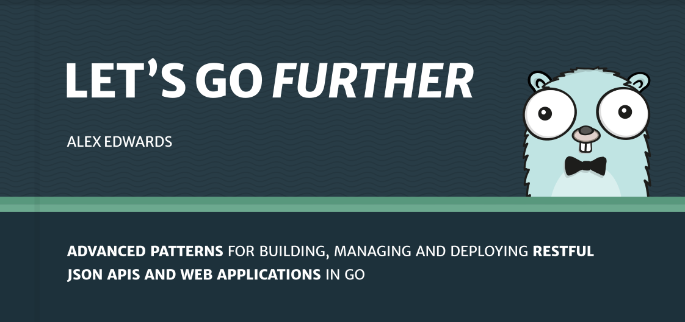

نتیجهگیری
در طول این کتاب، ما بهطور صریح موضوعات زیادی را پوشش دادهایم، از جمله مسیریابی، قالببندی، کار با یک پایگاه داده، احراز هویت/مجوز، استفاده از HTTPS، استفاده از بسته تست Go و موارد دیگر.
اما درسهای دیگری نیز بهطور ضمنی وجود داشتهاند. الگوهایی که برای پیادهسازی ویژگیها استفاده کردهایم و نحوه سازماندهی و ارتباط کد پروژه ما چیزی است که باید بتوانید در کارهای آینده خود به کار ببرید.
مهمتر از همه، من همچنین میخواستم کتاب نشان دهد که شما نیازی به یک فریمورک برای ساخت برنامههای وب در Go ندارید. کتابخانه استاندارد Go تقریباً تمام ابزارهایی را که نیاز دارید حتی برای یک برنامه نسبتاً پیچیده در اختیار دارد. برای مواقعی که به کمک در یک وظیفه خاص نیاز دارید، مانند مدیریت جلسه، کاهش CSRF یا هش کردن رمز عبور، بستههای شخص ثالث سبک و متمرکزی وجود دارد که میتوانید به آنها مراجعه کنید.
در این مرحله، اگر با کتاب کد زدهاید، توصیه میکنم کمی وقت بگذارید و کدی که تا کنون نوشتهاید را مرور کنید. همانطور که از آن عبور میکنید، مطمئن شوید که در ذهن خود روشن است که هر بخش از کد چه کاری انجام میدهد و چگونه با پروژه بهعنوان یک کل هماهنگ است.
شما ممکن است بخواهید به هر بخشی از کتاب که در ابتدا درک آن برایتان دشوار بود، بازگردید. به عنوان مثال، اکنون که با Go آشناتر شدهاید، فصل http.Handler interface ممکن است آسانتر قابل هضم باشد. یا اکنون که دیدهاید چگونه تست در برنامه ما انجام میشود، تصمیماتی که در فصل طراحی مدل پایگاه داده گرفتیم ممکن است برایتان جا بیفتد.
اگر نسخه بسته حرفهای این کتاب را خریداری کردهاید، به شدت توصیه میکنم تمرینات راهنمایی شده در فصل 16 (در انتهای این کتاب، پس از این نتیجهگیری) را انجام دهید. تمرینات باید به تثبیت آنچه آموختهاید کمک کنند و کار کردن بر روی آنها بهصورت نیمهمستقل به شما تمرین اضافی با الگوها و تکنیکهای این کتاب قبل از استفاده مجدد از آنها در پروژههای خودتان میدهد.
بیشتر برویم

اگر میخواهید بیشتر یاد بگیرید، ممکن است بخواهید Let’s Go Further را بررسی کنید. این کتاب بهعنوان دنبالهای برای این کتاب نوشته شده است و الگوهای پیشرفتهتری برای توسعه، مدیریت و استقرار APIها و برنامههای وب را پوشش میدهد.
این کتاب شما را از ابتدا تا انتها در ساخت و استقرار یک API JSON RESTful راهنمایی میکند و شامل موضوعاتی مانند:
- ارسال و دریافت JSON
- کار با مهاجرتهای SQL
- مدیریت وظایف پسزمینه
- انجام بهروزرسانیهای جزئی و استفاده از قفل خوشبینانه
- مجوزدهی مبتنی بر مجوز
- کنترل درخواستهای CORS
- خاموشیهای آرام
- نمایش معیارهای برنامه
- خودکارسازی مراحل ساخت و استقرار
میتوانید نمونهای از کتاب را بررسی کنید و اطلاعات بیشتر و پاسخهای متداول را در https://lets-go-further.alexedwards.net بیابید.